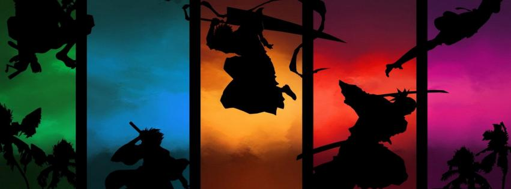

Aprendiendo a diseñar
.jpg)
Trama
La serie narra las aventuras de un adolescente llamado Ichigo Kurosaki, un estudiante de quince años que tiene la habilidad de interactuar con los espíritus. Una noche, Ichigo se encuentra con una Shinigami (死神, lit. dios de la muerte) llamada Rukia Kuchiki. Ella se sorprende por su habilidad para poder verla, pero su conversación es interrumpida por la aparición de un Hollow (ホロウ, horō, lit. hueco), un espíritu maligno. Después de que Rukia fuera gravemente herida al tratar de proteger a Ichigo, ésta intenta traspasarle la mitad de sus poderes a Ichigo para poder enfrentarse al Hollow en igualdad de condiciones.

Sin embargo, Ichigo, sin darse cuenta, absorbe los poderes casi por completo, y logra vencer con facilidad al espíritu. Al día siguiente, Rukia aparece en la clase de Ichigo como una humana de apariencia normal gracias a un cuerpo artificial (Gigai o cuerpo artificial), y le informa que debido a que ha absorbido todos sus poderes no puede regresar a su mundo hasta que los recupere. Entretanto, Ichigo acoge a Rukia en su casa y toma su trabajo de Shinigami, defendiendo a los seres humanos de los hollows y orientando a las almas buenas después de la muerte a un lugar llamado la Sociedad de Almas (尸魂界, Sōru Sosaeti).
.jpg)
Unos meses más tarde, en el sexto volumen de la serie, los superiores de la Sociedad de Almas se dan cuenta de que Rukia le había entregado sus poderes a un humano, lo cual está prohibido en la Sociedad de almas, por lo que envían a dos Shinigami para arrestarla y aplicarle la pena de muerte. Ichigo no logró evitar la captura de Rukia, pero con la ayuda de varios de sus amigos de clases que adquirieron capacidades espirituales, y el ex-capitán Shinigami Kisuke Urahara, parten hacia la base de la Sociedad de Almas, guiados por Yoruichi Shihoin. Una vez allí, Ichigo y el resto luchan contra la élite militar de Shinigami y finalmente consiguen detener la ejecución de Rukia.
Aspectos de la Serie
Aspectos de la Serie La serie tiene lugar en un universo de ficción en el que los personajes están divididos en distintas razas ficticias. Todas estas razas son los seres humanos, que en el momento en que murieron, pudieron o no descansar en paz. Las almas que logran ir a descansar en paz, son enviadas a la Sociedad de Almas, por un Shinigami en la que viven durante mucho tiempo, hasta resucitar en un nuevo cuerpo, mientras las que no lo hacen, son devoradas por los Hollow que las llevan a Hueco Mundo para transformarlas en uno de ellos, además de ganar energía una vez que han sido devoradas. A lo largo de la serie se van revelando nuevas razas, algunas resultantes de la combinación de dos razas en sí.
página siguiente